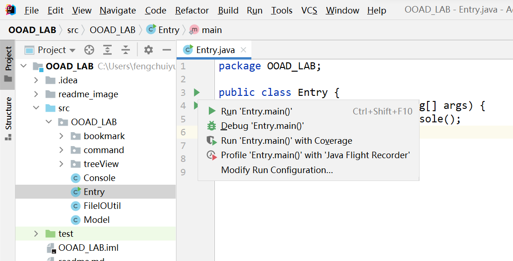
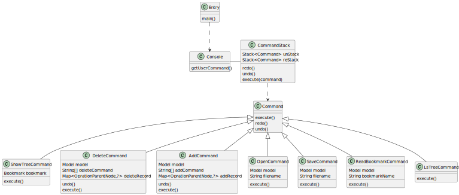

Lab 设计模式 郭仲天 19307110250
如何运行&测试
如果图片/视频显示有问题,还请查看readme.html文件
方法一:
1.将压缩包解压缩,里面有OOAD_LAB.jar文件,在命令行中运行即可运行
11java -jar OOAD_LAB.jar2.关于测试,由于使用了Junit,在网上搜了好久都找不到可以命令行直接运行测试的,要么就是过于麻烦,要么就是利用maven,因此我这里录制了一个运行测试的视频,如果助教想要实际运行测试的话,可以按照方法二进行操作
3.使用程序执行
如果要按照手动测试用例执行,进行书签时,还请将测试用例中的
11open "test1.bmk"修改为
11open "bookmark/test1.bmk"以便于后面使用ls-tree命令时可以更好的展示文件结构
方法二:
1.将压缩包解压缩,里面包括了源代码

2.使用idea打开,进入src/Entry.java中,运行main函数,即可运行代码

3.在test目录右键,点击run all test,即可运行所有测试用例

目录结构
531├──src # 源文件代码目录2│ └──OOAD_LAB3│ ├──bookmark4│ │ ├──"Bookmark.java"5│ │ ├──"MarkInfo.java"6│ │ └──"OperationParentNode.java"7│ ├──command8│ │ ├──"Command.java"9│ │ ├──commands10│ │ │ ├──"AddCommand.java"11│ │ │ ├──"DeleteCommand.java"12│ │ │ ├──"LsTreeCommand.java"13│ │ │ ├──"OpenCommand.java"14│ │ │ ├──"ReadBookmarkCommand.java"15│ │ │ ├──"SaveCommand.java"16│ │ │ └──"ShowTreeCommand.java"17│ │ └──"CommandStack.java"18│ ├──"Console.java"19│ ├──"Entry.java"20│ ├──"FileIOUtil.java"21│ ├──"Model.java"22│ └──treeView23│ ├──bookmarkTree24│ │ ├──"BookmarkCP.java"25│ │ ├──"BookmarkNP.java"26│ │ └──decorator27│ │ ├──"BookmarkLabelProvider.java"28│ │ ├──"BookmarkReadCountDecorator.java"29│ │ ├──"BookmarkStarDecorator.java"30│ │ └──"ILabelProvider.java"31│ ├──fileTree32│ │ ├──"FileSystemCP.java"33│ │ └──"FileSystemNP.java"34│ ├──"INameProvider.java"35│ ├──"ITreeContentProvider.java"36│ └──"TreeViewer.java"37├──test # 测试文件代码目录38│ └──OOAD_LAB39│ ├──bookmark40│ │ └──"BookmarkTest.java"41│ ├──command42│ │ ├──commands43│ │ │ ├──"AddCommandTest.java"44│ │ │ ├──"DeleteCommandTest.java"45│ │ │ ├──"LsTreeCommandTest.java"46│ │ │ ├──"OpenCommandTest.java"47│ │ │ ├──"ReadBookmarkCommandTest.java"48│ │ │ └──"ShowTreeCommandTest.java"49│ │ └──"CommandStackTest.java"50│ ├──test_bookmark51│ │ └──"test.bmk" # 测试用书签文件52│ └──"ConsoleTest.java"53面向对象模型阐释
分层情况
本次lab在实现中一共分为了三层,分别是用户层,业务层和数据层.
用户层:
- 在用户层中,实现了Console类,用于接收用户的输入,并将对应的命令转为不同的命令类,传递给业务层.
- 代码示例:(Console.java)
221public void getUserCommand() {2System.out.println("Welcome to the bookmark system!");3Scanner scanner = new Scanner(System.in);4while (true) {5String commandString = scanner.nextLine();6//split the OOAD_LAB.command by space7String[] commandItems = commandString.split(" ");8//each case is the same as the UI button9//add OOAD_LAB.command10if (commandItems[0].contains("add")) {11String[] commands = cutTheItem(commandItems.length==2?makeArrayToFour(commandItems):commandItems);12command = new AddCommand(commands);13CommandStack.execute(command);14}15//...16//redo17if (commandItems[0].equals("redo")) {18CommandStack.redo();19}20}21scanner.close();22}- 在用户层中,实现了CommandStack类,用于存储用户的命令,并提供撤销和重做的功能,同时每个命令都会调用对应Model层的方法以实现业务逻辑
- 代码示例:(CommandStack.java)
341public static void execute(Command command) {2command.execute();3//if the OOAD_LAB.command is add or delete ,we need to suport OOAD_LAB.command redo and undo4if (command instanceof AddCommand || command instanceof DeleteCommand) {5reStack.push(command);6//if can still redo,we need to clear the redo stack7if (unStack.size() > 0) {8unStack.clear();9}10}11}1213public static void undo() {14if(!reStack.isEmpty()) {15Command command = reStack.pop();16command.undo();17unStack.push(command);18}19else{20System.out.println("Can not undo");21}22}2324public static void redo() {25if(!unStack.isEmpty()) {26Command command = unStack.pop();27command.execute();28reStack.push(command);29}30else{31System.out.println("Can not redo");32}33}34- 用户层的UML类图 
业务层
- 由于业务层的实际上只是对bookmark做一些操作,实例上的代码量并不大,因此就写在了一个单独的Model类中
- 这个model类通过为Command提供封装好的借口,实现了对bookmark的增删改查
- 代码示例:(Model.java)
151public class Model {2public Map<OperationParentNode, ?> addCommand(String command[]) {3//...4}5public Map<OperationParentNode, ?> deleteCommand(String deleteCommand[]) {6//...7}8public void saveBookmarkToFile(String fileName) {9//...10}11public void loadBookmarkFromFile(String fileName) {12//...13}14//...15}- 除此之外,还写到了一些工具类,如FileIO等用来帮助实现业务逻辑
业务层的UML类图

数据层
在数据层,实现了Bookmark类,用于存储用户的书签信息,并提供了一些方法用于对书签自身的操作
同时,还实现了OperationParentNode类,用于存储操作的父节点,实现了MarkInfo类,作为存储某个书签的信息的类
- 数据层的UML类图

- 数据层的UML类图
运用的设计模式
命令模式
使用场景
在实现add和delete的command时,将add和delete的操作封装成command,并将command压入栈(commandStack)中,实现undo和redo的功能. 而在实现其他command时,同样也是将操作封装成command,command通过与model业务层交互实现对应的操作
类图

装饰器模式
使用场景
在实现书签的星标和阅读次数的显示时,使用了装饰器模式,将书签的星标和阅读次数的显示封装成装饰器,并将装饰器添加到书签的labelProvider中,实现书签的星标和阅读次数的显示.
类图

适配器模式
使用场景
在实现树形结构的显示时,使用了适配器模式,将文件系统的树形结构和书签的树形结构封装成适配器,并将适配器添加到树形结构的显示中,实现树形结构的显示.
类图

单例模式
使用场景
在对标签的状态进行保存时,把最顶层的书签作为单例模式存储,便于model获取书签信息以及打印等相关操作
未用到的设计模式与原因
工厂模式
原因
因为本次lab中的命令较少,且命令的类型较为简单,基本没有出现需要大量的更换整套内容的情况 同时,即使是需要从外部读取一些内容,也只是从文件中获取,比较简单,从而并未使用工厂模式
自动测试
测试用例
各个需求的单元测试
张老师在课上提到,每个命令至少给一个测试用例,因此我这里对每个命令给出了至少一个测试用例,除此之外,还为CommandStack以及Console类给出了对应的测试用例
单元测试函数一共有13个,用来测试各个命令以及console等类的基本功能
add命令以及undo和redo功能(共两个)
- addTitleCommandAndUndoTest()
- addBookmarkAndUndoCommandTest()
delete命令以及undo和redo功能(共两个)
- deleteBookMarkCommandAndUndoTest()
- deleteTitleCommandAndUndoTest()
ls-tree命令(共一个)
- lsTreeCommandTest()
show-tree命令(共一个)
- showTreeCommandTest()
open命令(共一个)
- openCommandTest()
read-bookmark命令(共三个)
- readBookmarkCommandTest1()
- readBookmarkCommandTest2()
- readBookmarkCommandTest3()
console类(共一个)
- consoleTest()
commandStack类(共两个)
- executeTest()
- undoAndRedoTest()
整体的复杂的组合测试
为了更好的测试程序的基本功能,这里给出了两个复杂的测试用例
这两个测试用例分别对应于手动测试的用例1,2,3,5的组合,涵盖了所有的命令
ComplexTest类中
complexTest1()
- 用于组合测试add,delete,read,show-tree,undo,redo等基本命令的实现与操作
complexTest2()
- 用于组合测试open,save,ls-tree等于业务逻辑不太相关的实现与操作
测试内容(示例)
- 1.以addTitleCommandAndUndoTest()测试函数为例,在测试之前,我们会有一个准备好的测试用的书签,这个书签在这里由BookmarkTest.java中的initAddCommandBookmarkTest()函数给出
261public static Bookmark initAddCommandBookmarkTest(){2 Bookmark bookmarkTest = new Bookmark("",0,new ArrayList<>(),new ArrayList<Bookmark>());3 ArrayList<Bookmark> subBookmark1_1 = new ArrayList<>();4 List<Pair<String,MarkInfo>> b3_marks = new ArrayList<>();5 b3_marks.add(new Pair<>("JFP",new MarkInfo("JFP","https://www.cambridge.org/core/journals/journal-of-functionalprogramming",0,false,4)));6 Bookmark b3_1 = new Bookmark("函数式",3,b3_marks,new ArrayList<Bookmark>());7 Bookmark b3_2 = new Bookmark("面向对象",3,new ArrayList<>(),new ArrayList<Bookmark>());8 List<Pair<String,MarkInfo>> b2_1_marks = new ArrayList<>();9 b2_1_marks.add(new Pair<>("elearning",new MarkInfo("elearning","https://elearning.fudan.edu.cn/courses",0,false,3)));10 List<Pair<String,MarkInfo>> b2_2_marks = new ArrayList<>();11 b2_2_marks.add(new Pair<>("Markdown-Guide",new MarkInfo("Markdown-Guide","https://www.markdownguide.org",0,false,3)));12 ArrayList<Bookmark> b2_2_subBookmarks = new ArrayList<>();13 List<Pair<String,MarkInfo>> b2_3_marks = new ArrayList<>();14 b2_3_marks.add(new Pair<>("Category-Theory",new MarkInfo("Category-Theory","http://www.appliedcategorytheory.org/what-is-appliedcategory-theory/",0,false,3)));15 b2_2_subBookmarks.add(b3_1);16 b2_2_subBookmarks.add(b3_2);17 Bookmark b2_1 = new Bookmark("课程",2,b2_1_marks,new ArrayList<Bookmark>());18 Bookmark b2_2 = new Bookmark("参考资料",2,b2_2_marks,b2_2_subBookmarks);19 Bookmark b2_3 = new Bookmark("待阅读",2,b2_3_marks,new ArrayList<Bookmark>());20 subBookmark1_1.add(b2_1);21 subBookmark1_1.add(b2_2);22 subBookmark1_1.add(b2_3);2324 bookmarkTest.addSubBookmark(new Bookmark("个人收藏",1,new ArrayList<>(),subBookmark1_1));25 return bookmarkTest;26 }- 在获取到初始的bookmark后,我们对应的执行测试操作,操作都在addTitleCommandAndUndoTest()函数中给出,使用junit框架来进行结果的assert对比,查看结果是否一样
- 在这里,我们assert比较的并不是某个bookmark转为字符串的值,因为如果bookmark转字符串的规则发生变化后,测试用例将会失效
- 因此我们使用模型比较的方式,也即比较两个书签的内部结构是否相同(包括层次,子书签等),为此,我重写了Bookmark和MarkInfo的equals()方法
- 我们接下来看一下测试了哪些内容,以下给出了addTitleCommandAndUndoTest()函数的内容
551 public void addTitleCommandAndUndoTest() {3 Bookmark bookmark1 = initAddCommandBookmarkTest();4 Command addCommand1 = new AddCommand(new String[]{"add-title","测试添加标题","at","面向对象"},new Model(bookmark1));5 CommandStack.execute(addCommand1);6 //the after add title bookmarks structure is:7 //|---个人收藏8 //9 //| |---课程10 //| |---elearning(https://elearning.fudan.edu.cn/courses)11 //12 //| |---参考资料13 //| |---Markdown-Guide(https://www.markdownguide.org)14 //15 //| | |---函数式16 //| | |---JFP(https://www.cambridge.org/core/journals/journal-of-functionalprogramming)17 //18 //| | |---面向对象19 //20 //| | | |---测试添加标题21 //22 //| |---待阅读23 //| |---Category-Theory(http://www.appliedcategorytheory.org/what-is-appliedcategory-theory/)24 assertEquals(bookmark1, getAfterAddTitleCommandBookMarkTest1());25 //to see the undo result26 CommandStack.undo();27 assertEquals(bookmark1, initAddCommandBookmarkTest());2829 //-----------------------------------------------------------------30 Bookmark bookmark2 = initAddCommandBookmarkTest();31 Command addCommand2 = new AddCommand(new String[]{"add-title","测试添加标题","at","课程"},new Model(bookmark2));32 CommandStack.execute(addCommand2);33 //the after add title bookmarks structure is:34 //|---个人收藏35 //36 //| |---课程37 //| |---elearning(https://elearning.fudan.edu.cn/courses)38 //39 //| | |---测试添加标题40 //41 //| |---参考资料42 //| |---Markdown-Guide(https://www.markdownguide.org)43 //44 //| | |---函数式45 //| | |---JFP(https://www.cambridge.org/core/journals/journal-of-functionalprogramming)46 //47 //| | |---面向对象48 //49 //| |---待阅读50 //| |---Category-Theory(http://www.appliedcategorytheory.org/what-is-appliedcategory-theory/)51 assertEquals(bookmark2, getAfterAddTitleCommandBookMarkTest2());52 //to see the undo result53 CommandStack.undo();54 assertEquals(bookmark2, initAddCommandBookmarkTest());55 }- 可以看到,我们在这里面不仅比较了添加title的结果,还比较了undo等操作是否正确.
- 其他函数的测试内容与这里介绍的基本类似,最终实现了所有命令以及一些重要类的测试任务,同时还测试了复杂的组合业务逻辑
测试结果
测试15个函数,全部通过,测试结果如下图所示